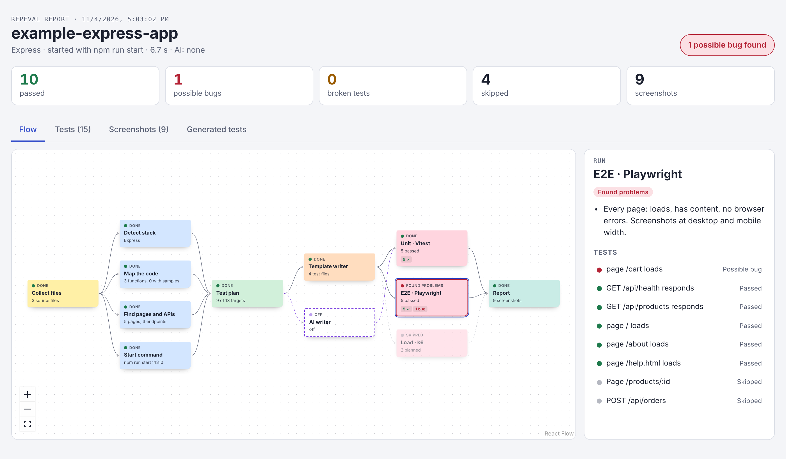

Repeval reads your repo, writes Vitest and Playwright tests, runs them in your own GitHub Actions and hands back a report with a screenshot of every page.

Finds your stack, every exported function, every page and API endpoint, and how to start the app.
Vitest for functions, Playwright for pages and APIs. Download them and keep the ones you like.
Desktop and phone screenshots of every page, and each bug explained in plain words.